The Good Dinosaur asks the question: What if the asteroid that forever changed life on Earth missed the planet completely and giant dinosaurs never became extinct? Pixar takes you on an epic journey into the world of dinosaurs where an Apatosaurus named Arlo makes an unlikely human friend. While traveling through a harsh and mysterious landscape, Arlo learns the power of confronting his fears and discovers what he is truly capable of.
The last to hatch among his siblings, 11-year-old Arlo has yet to make his mark on his family’s farm. Though he is eager to help out with chores, this sheltered Apatosaurus just can’t seem to get past his fear of everything.

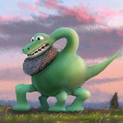
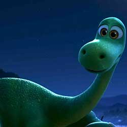
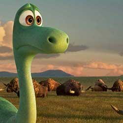


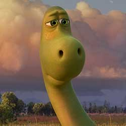

Brave and selfless, Poppa is a devoted husband and father, working tirelessly to make a life for his family on their farm. He has a soft spot for Arlo, his small and fearful son, and takes special care of him as he grows up. A loving wife and mother, Momma is smart and quick-witted. She’s a hard worker with a lot of love for her family, and she keeps her children and their farm in order.
Spot is a wild, tough and tenacious human boy who has lived alone in the wilderness for much of his life. He speaks in only grunts and growls, but his strengths are clear: he’s fearless and confident.


Buck is Arlo’s brother: they’re the same age, but Buck is bigger, stronger and a little rambunctious. Arlo's sister Libby is a capable and willful girl who can plow a mean field.
“We wanted Buck and Libby to be more capable, more brave than Arlo,” says Story Supervisor Kelsey Mann. “Everything comes more easily, despite the fact that they’re all the same age.”
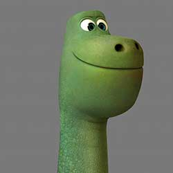
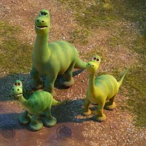
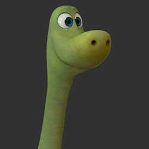
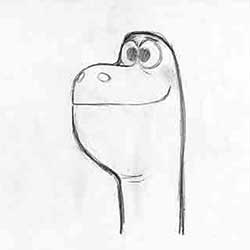
Pet Collector is a mysterious Styracosaurus who lives in the wilderness. Like Arlo, he harbors unreasonable fears. His ability to blend into his surroundings helps—along with an unusual (but not exactly fierce) collection of forest critters he’s recruited to protect him.
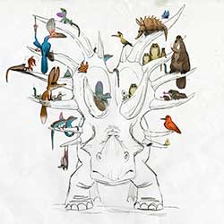


Nash, who isn’t the sharpest of spurs and has trouble keeping track of their herd, exhibits a mischievous charm and positive attitude that makes him good company out on the range.
Ramsey loves the challenge of driving a herd of longhorns with her father, Butch, and her little brother Nash. Ramsey has a lively, outgoing personality—she likes good jokes.
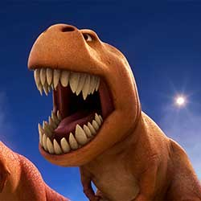
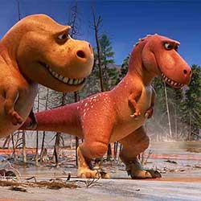
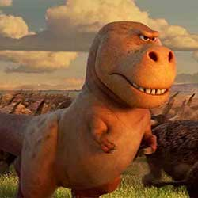
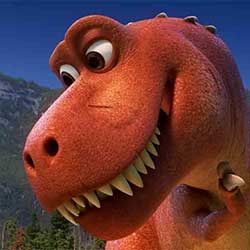
According to production designer Harley Jessup, the filmmakers did a deep dive into what’s known about the size of a real Apatosaurus in an effort to add authenticity to Arlo and his family. “We created a life-size printout of Arlo to help imagine his gigantic scale,” says Jessup.

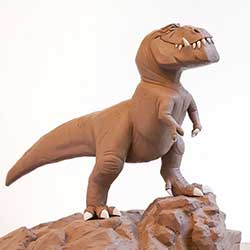
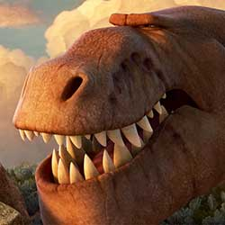

“The river became the vehicle that would take Arlo hundreds of miles away from home, where he wakes up and begins his life quest,” says Director Peter Sohn. “That same river becomes the yellow brick road back to Arlo’s family. And that simple concept became our basic structure: he gets washed away in first act and then fights his way home throughout the second and third acts."
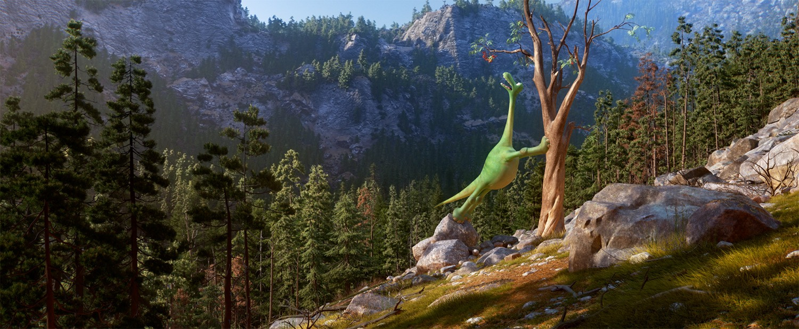
Their awe of nature’s beauty and power inspired the filmmakers to make the wilderness a character in itself and not just a setting for Arlo and Spot. “The golds and reds from the aspens were incredible—and the cottonwoods—I’ve never seen anything like that before,” says Director Peter Sohn. “The landscape is so huge. It makes you feel tiny. There’s such a simplicity to the graphic nature of the place that it felt perfect for making a giant animal like a dinosaur feel small.”
Arlo’s home, a simple ranch nestled in the plains, is the heart of his long journey home.
Their awe of nature’s beauty and power inspired the filmmakers to make the wilderness a character in itself and not just a setting for Arlo and Spot. The filmmakers studied the grasslands of Montana and the mesas in Wyoming’s Red Desert, then incorporated all of it in Arlo’s journey.
DIRECTED BY PETER SOHN
PRODUCED BY DENISE REAM, P.G.A
EXECUTIVE PRODUCER
JOHN LASSETER
LEE UNKRICH
ANDREW STANTON
ASSOCIATE PRODUCER MARY ALICE DRUMM
ORIGINAL CONCEPT AND DEVELOPMENT BY BOB PETERSON
STORY BY
PETER SOHN
ERIK BENSON
MEG LEFAUVE
KELSEY MANN
BOB PETERSON
SCREENPLAY BY MEG LEFAUVE
MUSIC BY
MYCHAEL DANNA
JEFF DANNA
STORY SUPERVISOR KELSEY MANN
FILM EDITOR STEPHEN SCHAFFER, A.C.E.
VISUAL DESIGN SHARON CALAHAN, A.S.C.
SUPERVISING TECHNICAL DIRECTOR SANJAY BAKSHI
PRODUCTION DESIGNERS HARLEY JESSUP
PRODUCTION MANAGER ANN BRILZ
SUPERVISING ANIMATOR MICHAEL VENTURINI
DIRECTOR OF PHOTOGRAPHY-LIGHTING SHARON CALAHAN, A.S.C
DIRECTOR OF PHOTOGRAPHY-CAMERA MAHYAR ABOUSAEEDI
SETS SUPERVISOR DAVID MUNIER
EFFECTS SUPERVISOR JON REISCH
VOLUMETRIC CLOUDS SUPERVISOR MATTHEW WEBB
CHARACTER SUPERVISORS
MICHAEL COMET
JUNYI LING
SIMULATION AND CROWDS SUPERVISOR GORDON CAMERON
RENDERING AND GLOBAL TECHNOLOGY SUPERVISOR SUSAN FISHER
EFFECTS SUPERVISOR JON REISCH
CHARACTER ART DIRECTOR MATT NOLTE
SETS ART DIRECTORS
NOAH KLOCEK
HUY NGUYEN
SHADING ART DIRECTOR BRYN IMAGIRE
SOUND DESIGNER CRAIG BERKEY
CASTING
KEVIN REHER, C.S.A.
NATALIE LYON, C.S.A.
POPPA JEFFREY WRIGHT
MOMMA FRANCES MCDORMAND
BUCK MARCUS SCRIBNER
ARLO RAYMOND OCHOA
SPOT JACK BRIGHT
PET COLLECTOR PETER SOHN
NASH A.J. BUCKLEY
RAMSEY ANNA PAQUIN
BUTCH SAM ELLIOTT